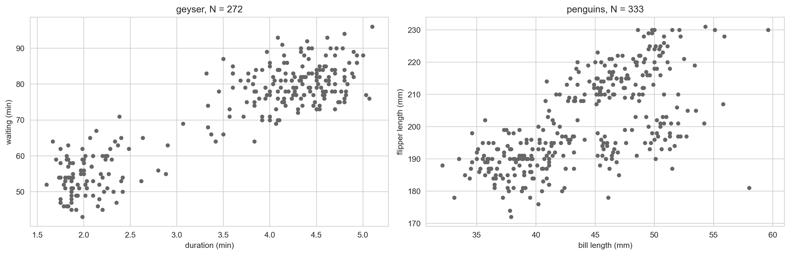

import numpy as np
import pandas as pd
import matplotlib.pyplot as plt
import seaborn as sns
sns.set_style("whitegrid")
faithful = sns.load_dataset("geyser")
penguins = sns.load_dataset("penguins").dropna()
X_geyser = faithful[["duration", "waiting"]].to_numpy()
X_peng = penguins[["bill_length_mm", "flipper_length_mm"]].to_numpy()
fig, axes = plt.subplots(1, 2, figsize=(14, 4.6))
axes[0].scatter(X_geyser[:, 0], X_geyser[:, 1], s=18, color="0.4")
axes[0].set_xlabel("duration (min)"); axes[0].set_ylabel("waiting (min)"); axes[0].set_title(f"geyser, N = {len(X_geyser)}")
axes[1].scatter(X_peng[:, 0], X_peng[:, 1], s=18, color="0.4")
axes[1].set_xlabel("bill length (mm)"); axes[1].set_ylabel("flipper length (mm)"); axes[1].set_title(f"penguins, N = {len(X_peng)}")
plt.tight_layout(); plt.show()